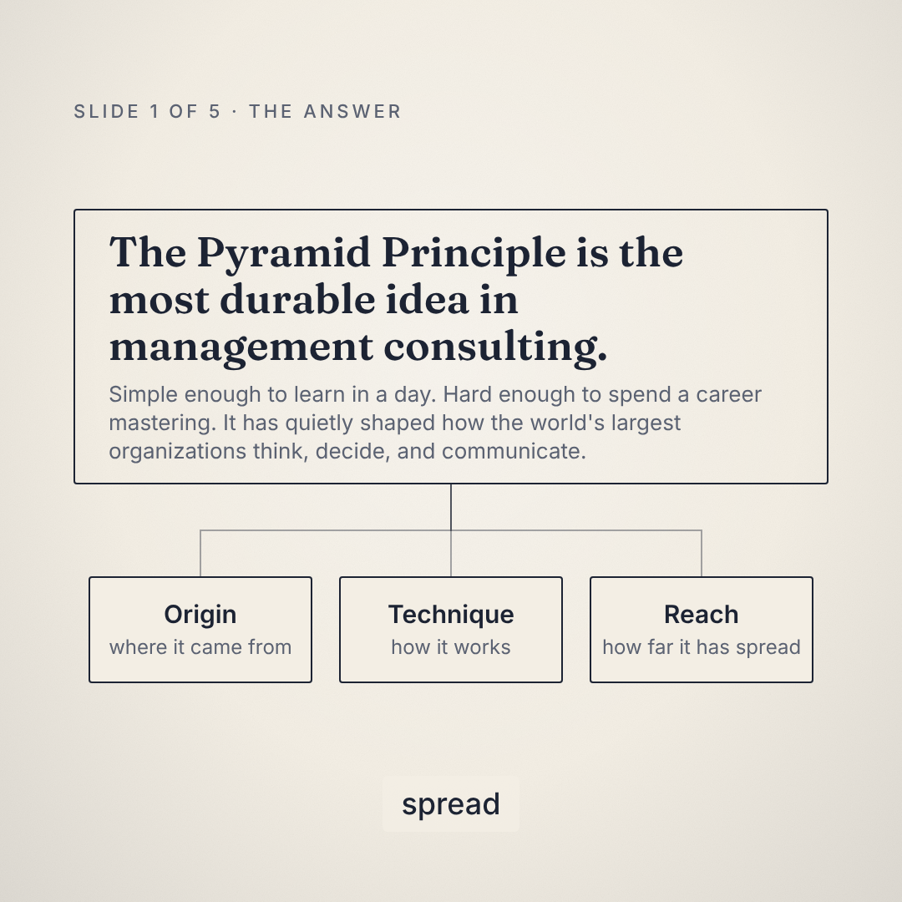
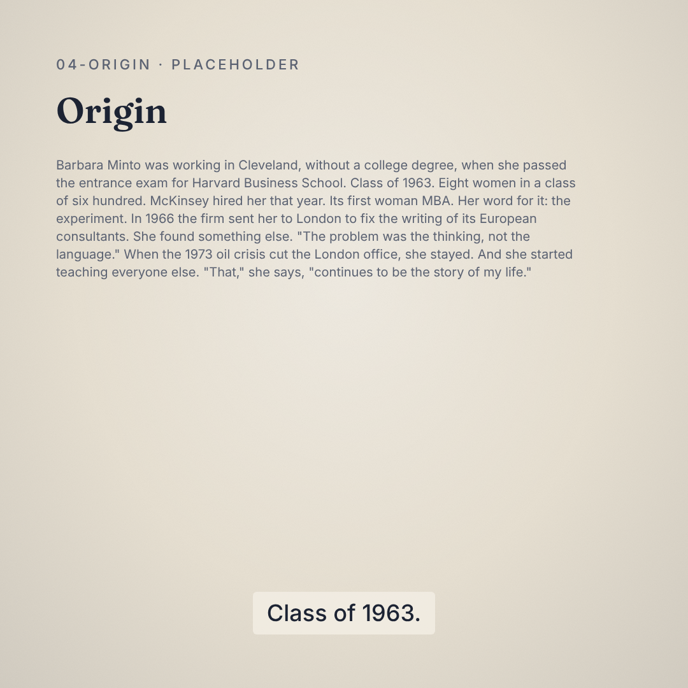
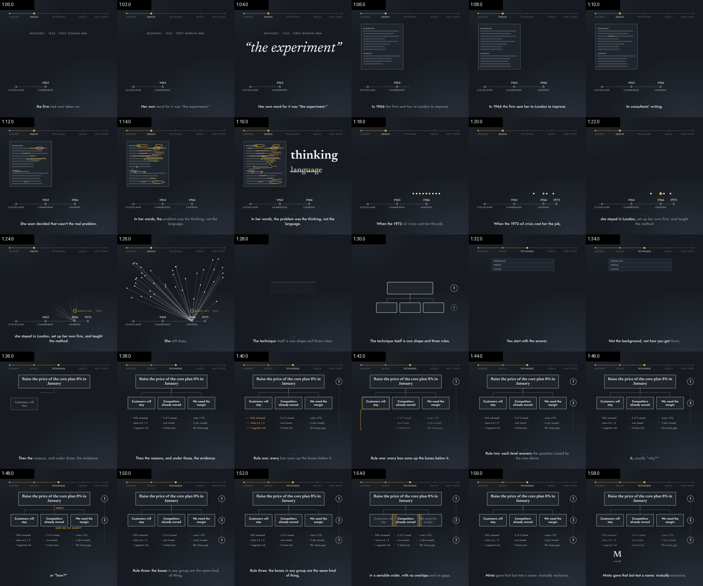
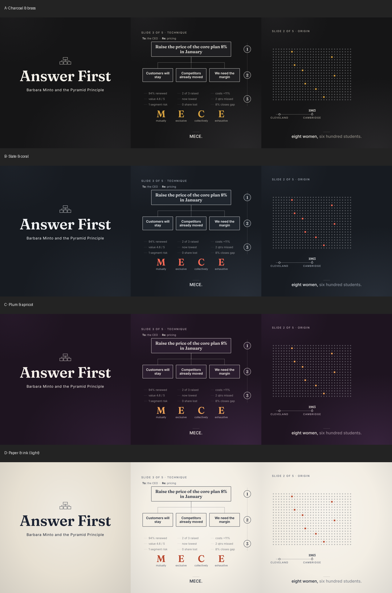
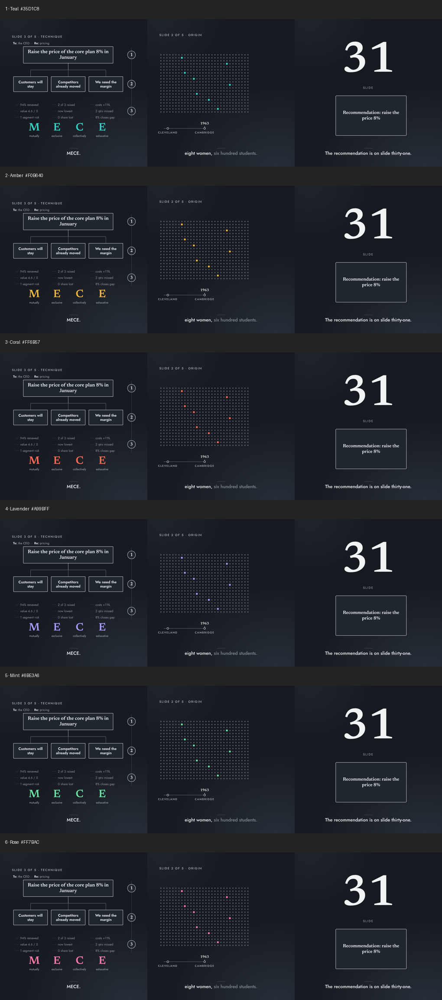
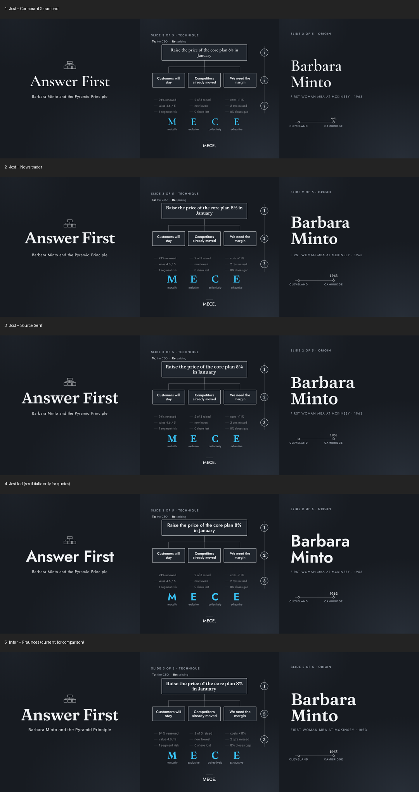
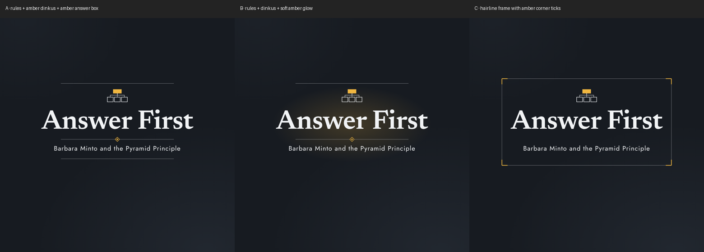

Barbara Minto and the Pyramid Principle
The Pyramid Principle is one of the few ideas from management consulting that has genuinely lasted, and the woman who wrote it down is barely known outside the industry. This is a four-minute film that tries to fix that, and it was made almost entirely by an AI team working under a human director.
Three constraints shaped it. The film had to be built in code, so that scenes could be inserted, removed or re-ordered by editing a file rather than a timeline. It had to practise what it preaches: answer first, then three supports, then next steps. And it had to earn its place in a feed that autoplays muted, so every idea had to land as a picture, with the voice as reinforcement rather than the other way round.
The director set the goals, made every taste decision and vetted every claim. The coordinating agent (Claude Code, running the Fable 5.1 model) did the research, wrote and rewrote the script, built the pipeline, and ran a team of sub-agents for building, reviewing and polishing. What follows is the honest version of how that went, including the cut that got rejected.
Seven passes, in order. The full working documents, from the research dossier to every review, are in the repository under docs/process.
We agreed the audience, the length ceiling, the square format, a text-to-speech narrator and the self-referential structure before writing a word. Then research: every biographical fact and every number went into a dossier with a confidence grade and a source, and anything the director could verify from experience was flagged for them rather than taken from a website.
The first script was written the way you'd write slide headlines: short fragments, one per beat. The first cut had one designed scene and eleven placeholders showing the narration as text, with a synthetic voice that ran straight through every full stop. The director's verdict was blunt and correct. The lesson stuck: never show scaffolding, and never let the words on screen be the words being spoken.


Script v2 went to an adversarial editor and a panel of three simulated viewers (a product manager, a sceptical ex-consultant, a second-year analyst, all on a phone with the sound off) before any audio existed. Their notes produced v3. Then five builder agents each took two scenes, working from a storyboard that specified what is on screen during every beat, with one rule above all others: nothing on screen may repeat the narration except the captions. Each builder verified their scenes with rendered stills and contact sheets before reporting.
The first full render was reviewed by the viewer panel again and by a motion-designer critique, both working from contact sheets (one frame every two seconds). They returned twenty-five ranked fixes with timestamps: top-loaded frames with dead space beneath, static holds while the voice moved on, a caption box that fought the page, colliding labels. Every fix went back to the builder who owned the scene.

The picture was now good and the words were not. Fragments that read fine on a page sounded like nobody when spoken. A "clean editor" pass read every line aloud, rewrote the whole script as full sentences with natural connectives, put pauses only where a speaker would breathe, and removed every claim that had drifted past its source. Two whole scenes were cut at this stage because they were clever rather than useful, and the three closing "next steps" were rewritten by the director.
The first dark palette drifted too close to a well-known consultancy's look, sweeping line-work and all. Rather than argue about it in words, we rendered the same three frames under every candidate: four palettes, six accent colours, five type pairings, three title treatments. The director chose from the sheets. Nothing was fully rendered until the look was settled.
The remaining passes were the kind a human editor would make: a section tracker instead of a slide counter, a numbered margin that actually occludes the line behind it, a bridge sentence so the hook doesn't jump from a buried recommendation to a woman at McKinsey without a promise in between. Four renders later, it was done.
Slate rather than navy. One amber accent, used only where something is the answer. Newsreader for the big statements, Jost for everything else. No photographs, because none could be sourced with clear rights; the origin chapter is told entirely in type and motion. Every colour and typeface is a token, switchable by environment variable, which is what made the comparison sheets cheap.




| Picture | Remotion 4. One React component per scene, assembled in a transition series with short crossfades. A recursive pyramid layout with a camera transform drives every tree, push-in and morph. Rendered with Remotion's bundled headless Chrome and ffmpeg on WSL2. |
|---|---|
| Narration | Kokoro-82M, an open-source text-to-speech model, voice af_heart. The script is stored as beats; each beat is synthesised separately and followed by a real silence, which is how the voice breathes. Kokoro's word timestamps drive both captions and animation cues. An inline phoneme override makes MECE sound the way Minto says it. |
| Checking the voice | faster-whisper transcribes every generated clip and diffs it against the script, so a mangled word is caught without anyone listening. |
| Sync | Scene durations are derived from the audio manifest. Scenes key their motion to spoken words (cue(scene, "phrase")) or beat boundaries, so regenerating the narration never breaks sync and re-ordering scenes is a one-line edit. |
| Review tooling | A Python script renders one frame every N seconds into tiled contact sheets with timestamps. That, plus single stills, is how agents "watched" the film. |
| Orchestration | Claude Code with the Fable 5.1 model as coordinator; forked sub-agents as builders (one per pair of scenes), adversarial editor, simulated-viewer panel, motion-designer critic and clean editor. Builders own files; reviewers write ranked fix lists with timestamps. |
| Hardware | A desktop PC, Windows with WSL2, one consumer GPU for the TTS and transcription models. |
| Fonts | Newsreader and Jost via Google Fonts, loaded through Remotion's font package at render time. |
src/scenes.json ──▶ scripts/narration/generate.py ──▶ public/audio/<scene>.wav
(beats) (Kokoro, edge-trim, pauses) src/generated/narration.json
(durations, word + beat timings)
│
src/scenes/*.tsx ◀── cue() / beatStart() ◀── src/narration.ts ◀────────┘
│
src/Root.tsx ──▶ npx remotion render ──▶ out/answer-first.mp4
│
scripts/review/contact_sheet.py ──▶ out/review/*-sheet-NN.png (what the reviewers read)
The repository is meant as a starting point for the next film. Change the script in one JSON file, regenerate the narration, and the scenes re-time themselves. Swap the palette or the type with an environment variable. Add a scene by adding a file and one line.
If you are an AI agent picking this up, read AI-START-HERE.md first. It is a note from the agent that made this to whoever makes the next one: what worked, what got rejected, and the questions to ask the human before starting.
Everything below is in docs/process/ in the repository, lightly sanitised but otherwise as written during the work.
“The pyramid is a tool to help you find out what you think.”
— Barbara Minto